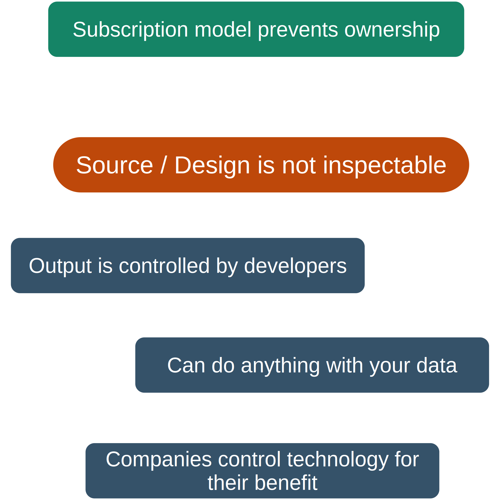
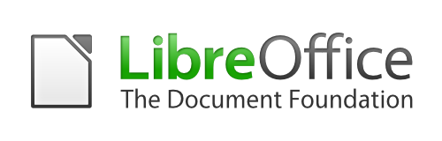

Digital Freedom
Digital freedom is the ability to freely access information and digital content without restrictions from governments or other organizations.
Open Source
Open Source is a global movement to provide freely accessible, modifiable and controllable software and hardware to the public.
Open Source movement is a major player in the struggle to maintain our digital freedom.
- European Union was recently considering passing an act to provide intentional back-doors to Instant Messaging software.
Open Source software
- Often called Free and Open Source Software - FOSS
- Software that's made with publicly available source code
- Allows for free distribution, modification, inspection and usage
- Free as in freedom, not necessarily cost
- Around 90% of the internet is run on FOSS
- Almost every computerized consumer technology contains FOSS components
Open Source hardware
- Hardware whose design and manufacturing information is publicly available
- Allows for replication by third-parties
The problem with closed source
The Document Foundation
- Aims to create a Open Source specification for digital documents
- Goals are interoperability and compatibility
- Has created
- ODT - Open Document - Text, replacing Microsoft Word's DOCX
- ODS - Open Document - Spreadsheet, replacing Microsoft Excel's XLSX
- ODP - Open Document - Presentation, replacing Microsoft Powerpoint's PPTX
Software

Location: Germany
KDE Community
- Creates FOSS software for Linux (Primarily), Windows, Mac and other platforms.
- A global community of thousands of developers, designers etc.
- Maintains a FOSS collection of hundreds of software
- Pioneers in Eco-Computing
- KDE's Okular is the first ever software to get certified for environmental friendliness by the German government's Blue Angel eco-label
- Founder of BE4FOSS initiative to collaborate with German government in encouraging FOSS software to strive for environment-friendliness.
Software
Location: Germany
Framework
- One of the largest contributors to 'Right to repair' movement
- Produces FOSS and partially open hardware
- Specializes in modular and repairable computing devices
Hardware
 Location: United States
Location: United States
Location: United States